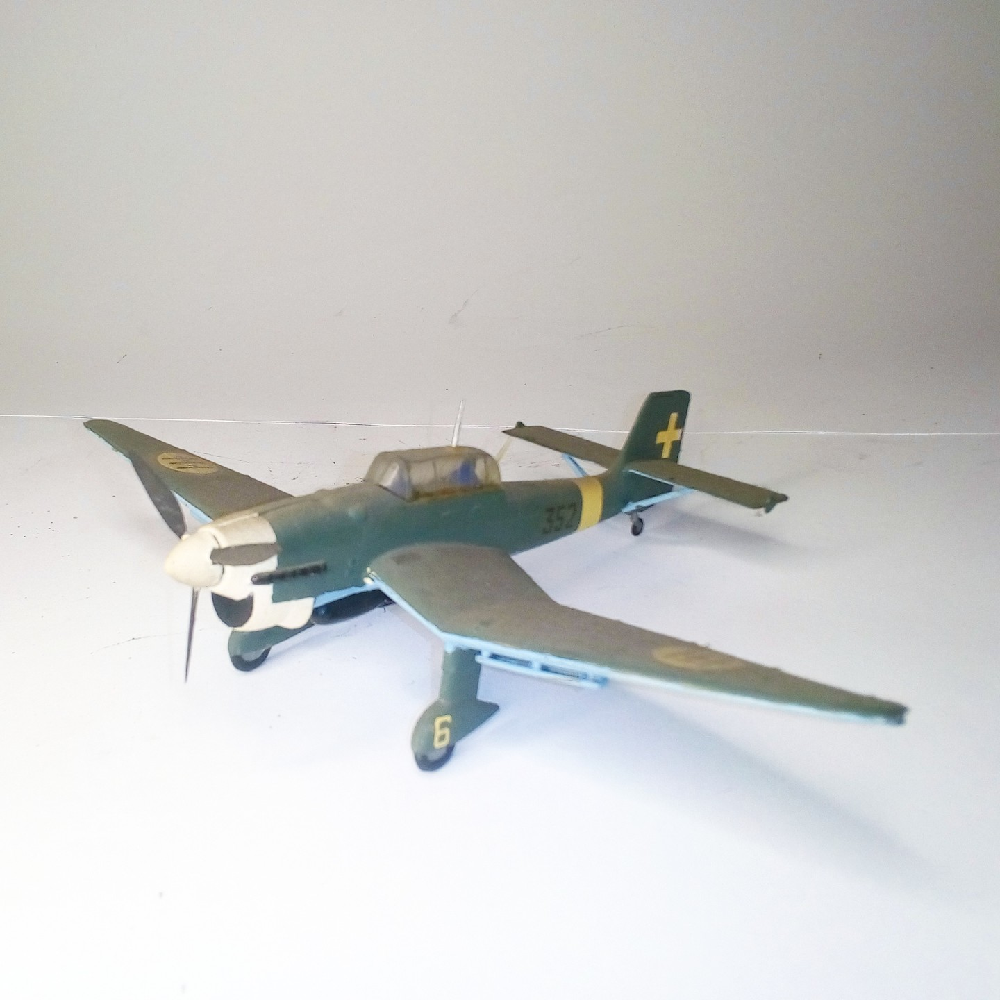

Aerei · scale model archive
Junkers Ju87 Stuka
Junkers Ju87 Stuka — Kit: Airfix, Scale: 1/72. As flown by Italian Regia Aeronautica #!/72 #Airfix

Photo gallery
English description
As flown by Italian Regia Aeronautica
#!/72 #Airfix
Descrizione italiana
As flown by Italian Regia Aeronautica.